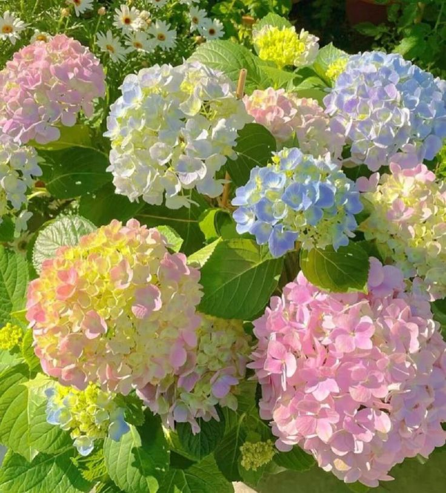
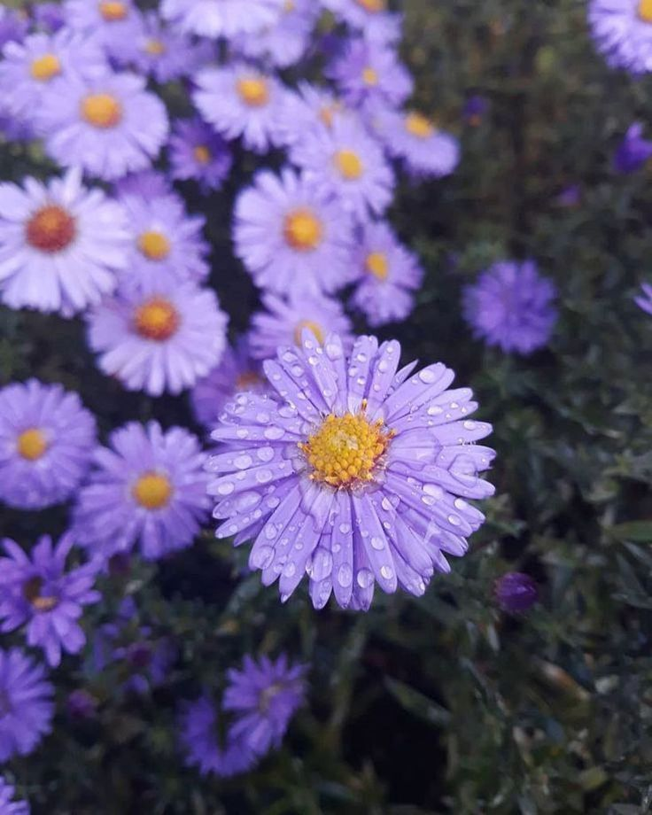
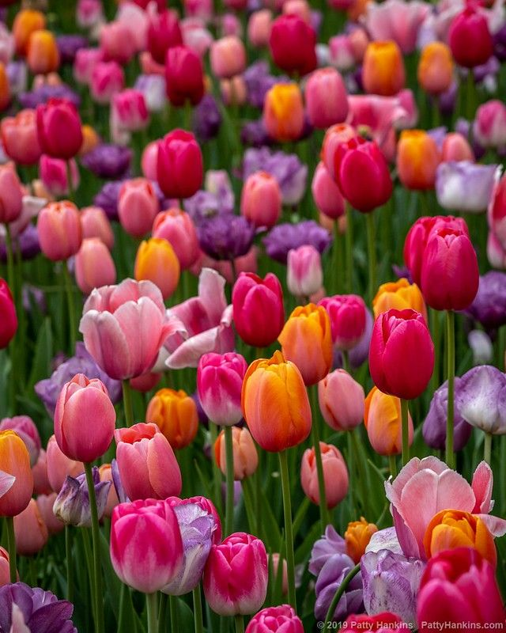
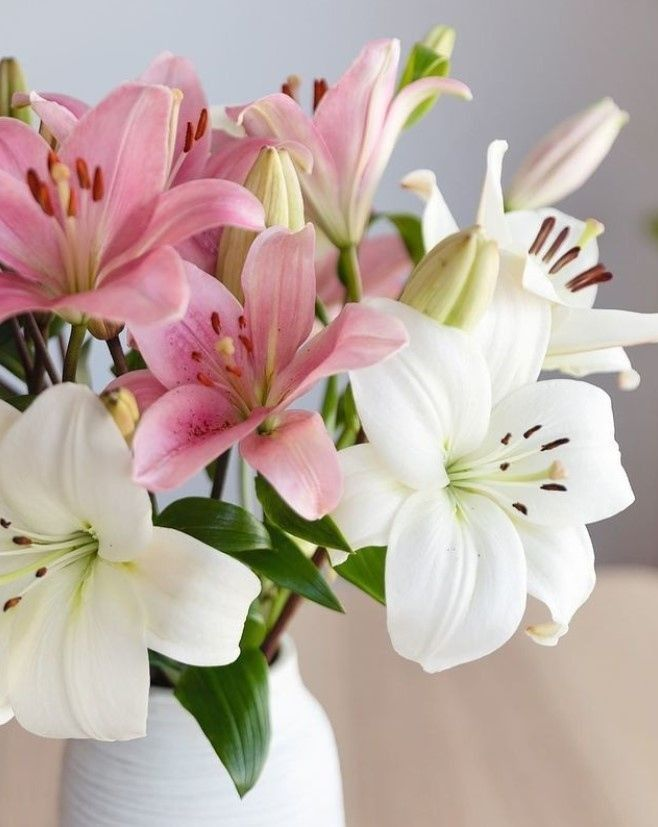
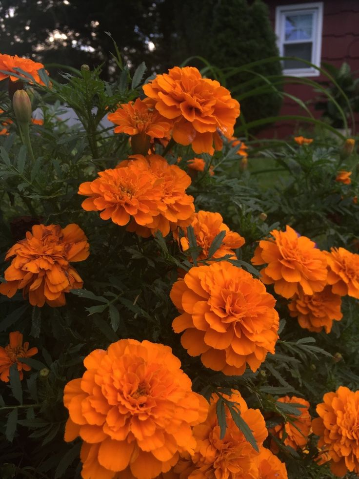
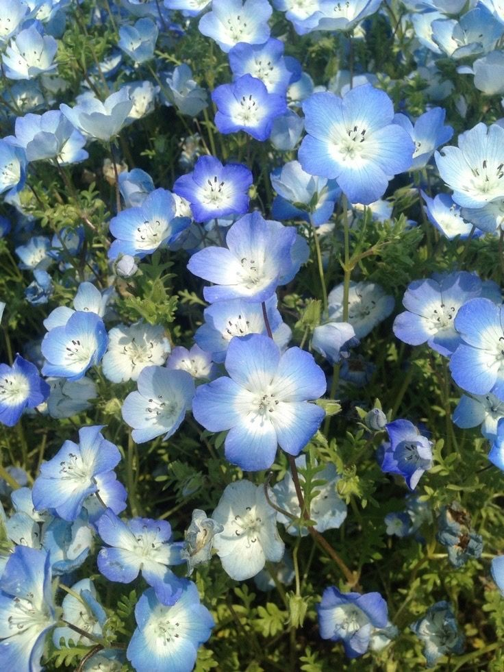

Dari bawah ini bunga mana yang kamu suka?
Foto Bunga |
Deskripsi |
|  |
Bunga hydrangea atau hortensia juga hadir dalam warna putih selain pink, biru, dan ungu. Salah satu varietas paling populer adalah hydrangea oakleaf. Bunga putih kecil mereka tumbuh dalam kelompok kerucut yang menawan. Semak umum ini memberikan kontras menakjubkan dengan bunga musim semi lainnya yang lebih berwarna. |
|  |
Di Indonesia sendiri, aster termasuk komponen bunga karangan yang dianggap penting.Dalam satu tangkai terdapat beberapa cabang yang ujungnya adalah kuntum bunga.Aster sangatlah mudah didapat dan tidak mengenal musim untuk berbunga. Di antara jenis-jenis aster yang sering kita jumpai, aster merah adalah bunga yang tengahnya berwarna hijau muda, sedang kelopaknya memanjang namun agak jarang.Kemudian ada juga aster merah muda, yang satu ini memiliki banyak jenis di antaranya ialah jenis euro. |
|  |
Tulip merupakan tumbuhan tahunan berumbi yang tingginya antara 10–70 cm, daunnya berlilin, berbentuk sempit memanjang berwarna hijau nuansa kebiru-biruan, dan bunganya berukuran besar terdiri 6 helai daun mahkota. Tulip hasil persilangan menghasilkan bunga berwarna tunggal, merah, oranye, kuning, hijau, biru, ungu, atau berbagai macam kombinasi dan gradasi warna. Tulip menghasilkan biji-biji berbentuk bundar pipih yang dibungkus kapsul kering. |
Foto Bunga |
Deskripsi |
|  |
Bunga bakung adalah tanaman keras yang tingginya berkisar antara 1–6 kaki (30–180 cm). Mereka membentuk umbi bawah tanah bersisik telanjang atau tanpa tunik yang merupakan organ perennasinya. Bunganya besar, seringkali harum, dan tersedia dalam berbagai warna termasuk putih, kuning, oranye, merah jambu, merah dan ungu. |
|  |
Bunga marigold dikenal tumbuh baik di taman-taman di seluruh dunia tanpa masalah. Sebagai tanaman tahunan, bunga marigold dapat ditanam di Zona USDA 2-11 dan dicabut dari kebun setelah embun beku turun. Marigold memiliki banyak kegunaan. Bunga marigold sering ditanam di kebun sayur sebagai tanaman perangkap atau pengusir hama atau di petak-petak bunga hias untuk mendapatkan bunga musim panas yang menakjubkan. |
|  |
Myosotis atau bunga kuping tikus adalah sebuah genus dari tumbuhan berbunga yang berada pada famili Boraginaceae. Namanya berasal dari kata Bahasa Yunani μυοσωτίς yang berarti telinga tikus, dari wujud tumbuhan tersebut yang dahulu orang kira mirip dengan telinga tikus. Pada belahan bumi utara,tumbuhan ini umum dieknal sebagai bunga forget-me-not atau rumput kalajengking. Myosotis alpestris menjadi bunga resmi Alask dan Dalsland, Swedia. Tumbuhan dari genus ini umum dikelirukan dengan forget-me-not Pulau Chatham, yang merupakan anggota dari genus yang berkerabat, Myosotidium. |